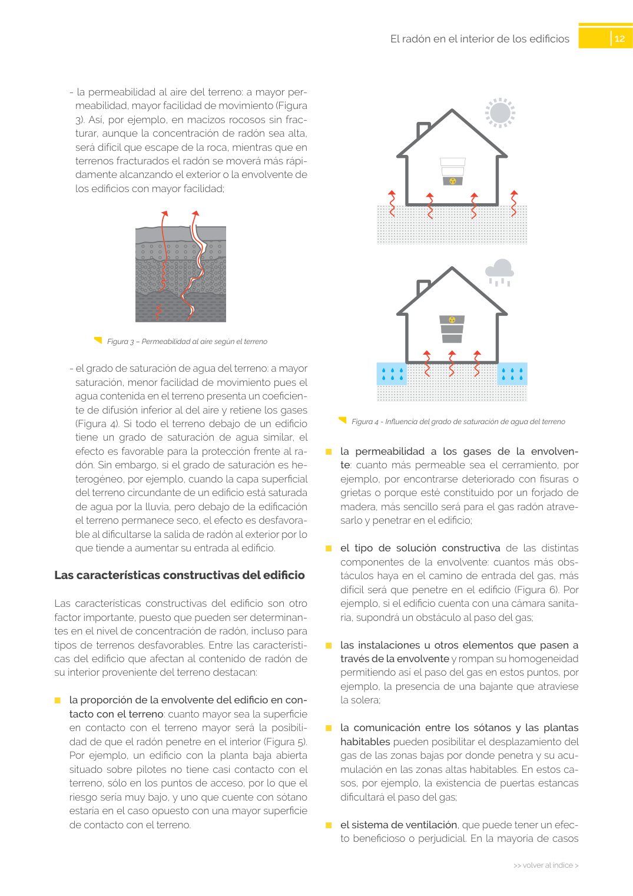
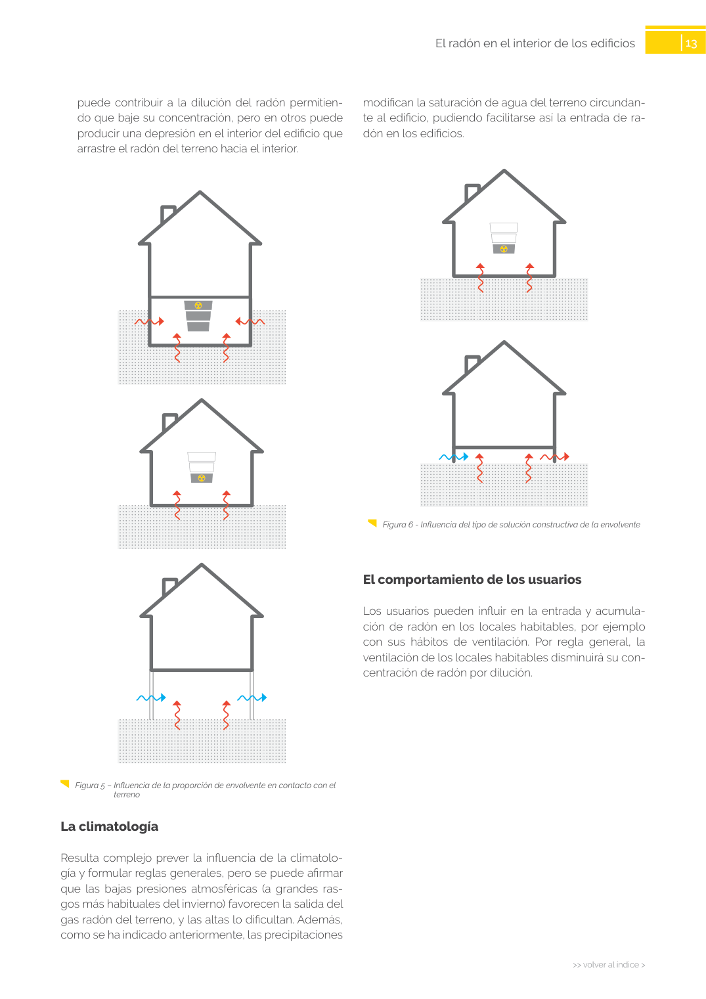

GUIA · Las características constructivas del edificio · versión sin-fecha · capa guia
Formatos: JSON compacto · Markdown · PDF fuente
Ámbito del documento · texto del ámbito · documento y tablas
Tipo: tablas, figuras · nivel 3 · sección estimada: 8 escalera abierta · padre: a0026
Las características constructivas del edificio Las características constructivas del edificio son otro factor importante, puesto que pueden ser determinan tes en el nivel de concentración de radón, incluso para tipos de terrenos desfavorables. Entre las característi cas del edificio que afectan al contenido de radón de su interior proveniente del terreno destacan: ■ la proporción de la envolvente del edificio en con tacto con el terreno: cuanto mayor sea la superficie en contacto con el terreno mayor será la posibili dad de que el radón penetre en el interior (Figura 5). Por ejemplo, un edificio con la planta baja abierta situado sobre pilotes no tiene casi contacto con el terreno, sólo en los puntos de acceso, por lo que el riesgo sería muy bajo, y uno que cuente con sótano estaría en el caso opuesto con una mayor superficie de contacto con el terreno. 13 >> volver al índice > >> volver al índice > El radón en el interior de los edificios modifican la saturación de agua del terreno circundan te al edificio, pudiendo facilitarse así la entrada de ra dón en los edificios. Figura 6 - Influencia del tipo de solución constructiva de la envolvente


PDF fuente redistribuible: copia fiel enlazada en esta página (SHA256 verificado).